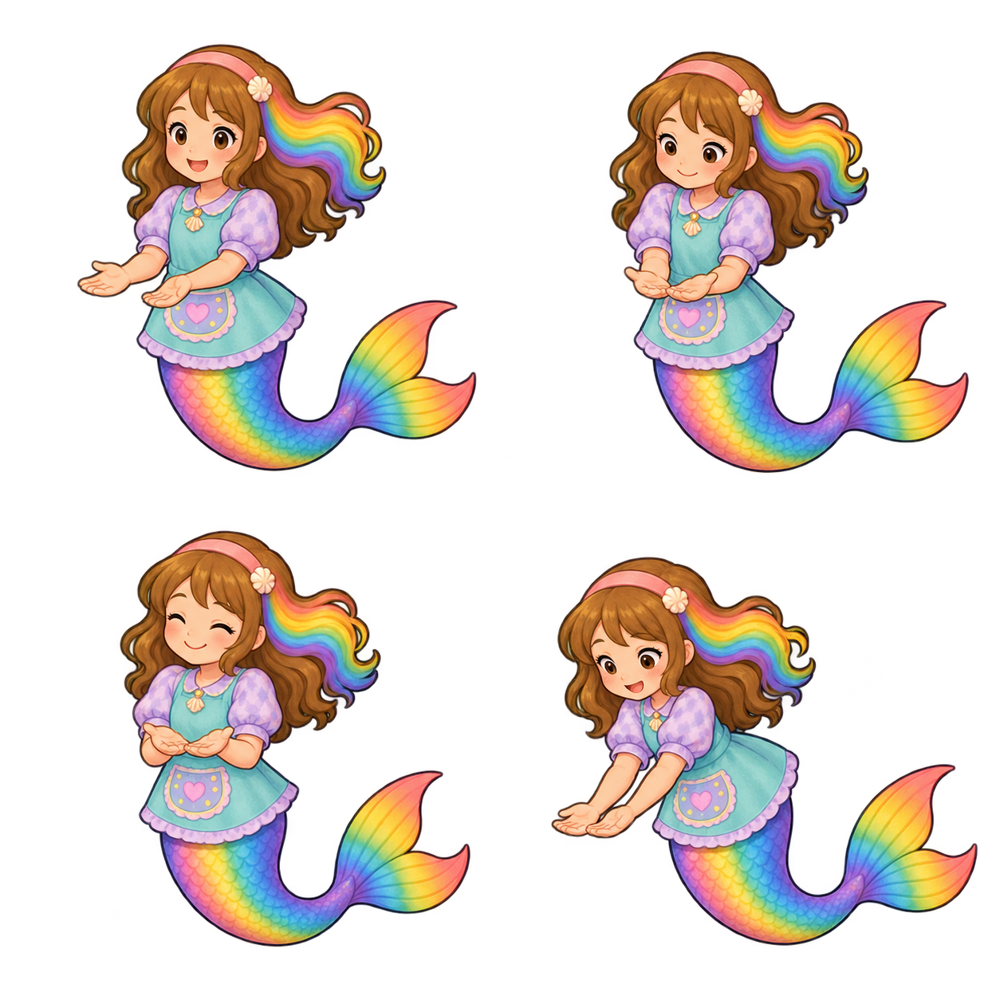
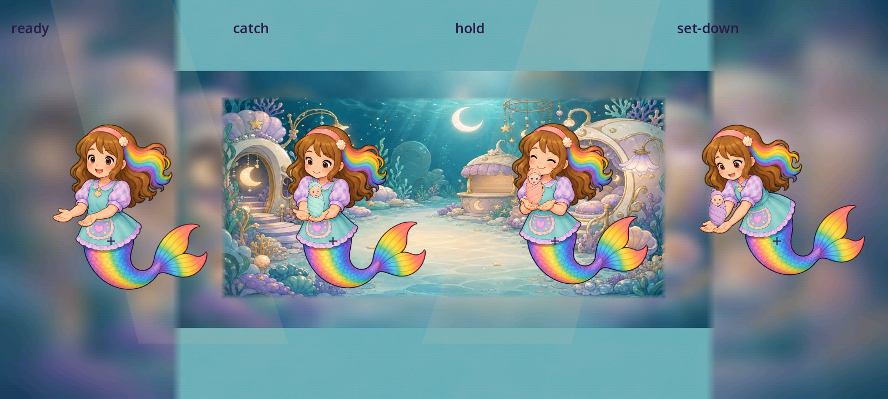

Fresh nursery body care poses
New source candidate, not integrated. Four individual 4.6 drafting opinions; no owner or action acceptance.
The existing nursery pose sheet had wash, bottle, pat and blanket actions. This fresh generation preserves Roshan’s identity and costume while adding empty-palmed receiving, catching, holding and setting-down keys. The existing baby remains separately owned by the game.

Ready · provisional source 4.6/5
Both empty palms are visible and connected to the established lavender sleeves. The attentive face, hair streak, apron and complete single tail retain the approved identity. This gives the job an actual receiving body rather than a detached-arm graphic.
Native cell[0, 0, 627, 627], alpha8 margins[96, 54, 29, 35]. Mounted/action score pending.
Catch · provisional source 4.6/5
The inward hands form a shallow receiving support in front of the apron; elbows and wrists stay connected and the face directs attention toward the action. No baked baby or bottle competes with the existing baby instance. Native body/hand sockets must be measured before a mounted claim.
Native cell[627, 0, 627, 627], alpha8 margins[136, 64, 38, 33]. Mounted/action score pending.
Hold · provisional source 4.6/5
The close palms, softened elbows and content expression read as a gentle settled hold. The body is complete and the costume and tail colors remain coherent with the receiving poses. Empty palms preserve one separately owned baby in runtime; actual supported contact has not been played.
Native cell[0, 627, 627, 627], alpha8 margins[149, 36, 35, 66]. Mounted/action score pending.
Set-Down · provisional source 4.6/5
The lean and paired downward-forward palms communicate a careful set-down. The tail remains one complete continuous anatomy. The head/fin position changes require per-pose anchor registration; these four authored keys do not by themselves prove a fluid or accepted animation.
Native cell[627, 627, 627, 627], alpha8 margins[64, 71, 28, 68]. Mounted/action score pending.
Four source 4.6 opinions do not establish contact, temporal animation, engine sampling, continuity, device/child or owner acceptance. Low-opacity alpha1 specks extend outside the alpha8 subject bounds; register meaningful hand/foot sockets explicitly rather than using unthresholded canvas bounds. Full runtime atlas preparation still pending.
- Measure per-pose hand/palm, body and tail anchors and prove engine-side sampling.
- Place each existing baby exactly once on the actual support sockets.
- Review real receiving/holding/set-down timing and settle at both aspects.
- Preserve frame/identity ownership when multiple babies overlap.
- Review every missed-baby safe return and all other nursery phases.
Exact cell review · Prompt/source provenance · Below-target live contact study
Native engine fit diagnostics
Independent held keys with original babies on manually estimated palms. This comparative fixture is not gameplay or a completed set-down. No source pixels were edited.
 1280x720 · exact Mobile viewport
1280x720 · exact Mobile viewport
1600x720 · exact Mobile viewportThe babies sit visibly on connected palms; hold and forward lean read clearly. The receiving cushion, release, safe-return, real input, state transitions and body staging remain open. No conspicuous colored edge contamination is visible at these display scales. Declared anchors · Exact native receipts